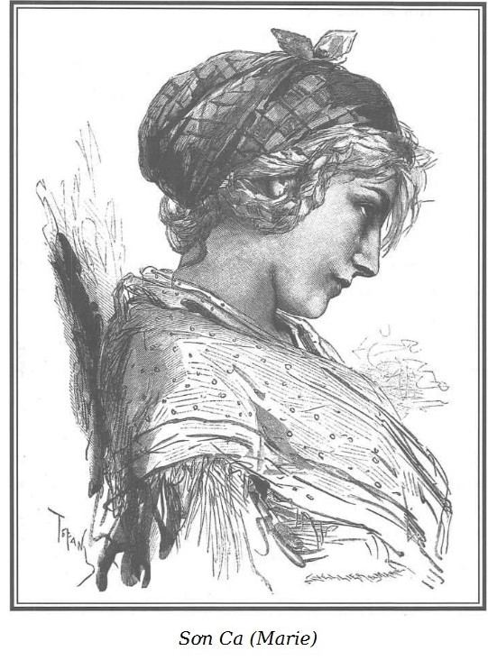

– Hãy kể từ đầu đi. – Chọc Tiết nói.
– Đúng đấy. Cha mẹ cháu là ai? – Rodolphe hỏi.
– Cháu không có cha mẹ.
– Chà, quái thật! – Chọc Tiết nói.
– Vâng, không hề thấy, không hề biết, cháu sinh ra dưới gốc bắp cải như người ta thường nói với trẻ con.
– Thật lạ lùng! Sơn Ca ạ, chúng ta cùng một hoàn cảnh.
– Anh cũng thế ư?
– Mồ côi, trên vỉa hè Paris, giống như cô em.
– Thế ai nuôi cháu? – Rodolphe hỏi.
– Cháu không biết… từ lâu lắm rồi, cháu nhớ lại là lúc lên bảy, lên tám, cháu ở với một mụ già chột, người ta gọi là mụ Vọ. Mụ có cái mũi khoằm, một mắt xanh tròn xoe giống như con cú bị móc một mắt.
Chọc Tiết cười ha hả:
– Tao biết ngay là mụ. Đúng là mụ Vọ rồi.

.Sơn Ca kể tiếp:
– Mỗi buổi chiều, mụ Vọ bắt cháu đi bán kẹo mạch nha trên cầu Mới, một kiểu ăn xin đấy. Nếu cháu không mang về được ít nhất mười xu thì mụ đánh nhừ đòn chứ không cho ăn.
– Hiểu rồi cô em ạ, – Chọc Tiết nói – một cú đá thay cơm, ăn kèm với những cái bớp tai.
– Trời ơi! Đúng vậy.
– Chắc chắn mụ không phải là mẹ cháu chứ?
– Cháu biết chắc chắn điều đó, mụ Vọ vẫn nhiếc cháu là đứa không cha không mẹ, mụ ấy thường bảo là đã nhặt được cháu ở ngoài phố.
– Thế là cô em bị ăn đòn thay cơm khi không mang về được mười xu phải không?
Sơn Ca kể tiếp:
– Mỗi lần như thế, cháu chỉ được một cốc nước lạnh, suốt đêm đói, run cầm cập trong cái đệm rơm trải dưới đất, mụ Vọ đã trải một cái ổ như thế dành cho cháu. Đừng tưởng như thế mà ấm đâu, lầm to!
– Đệm lông xứ Beauce* ư? Đúng là lạnh chết cóng đi được! Phân khô còn ấm gấp trăm lần. Nhưng ta lại nói đổng. Chó thật! Cứ thích đi!
Xứ Beauce: vựa lúa nước Pháp, ở đây Chọc Tiết nói đùa “đệm lông xứ Beauce” chỉ ổ rơm.
Câu nói đùa đó khiến Sơn Ca mỉm cười và tiếp tục:
– Sáng hôm sau, mụ Vọ cũng chỉ cho cháu ăn cả ngày như mức hôm trước và bắt cháu phải đến Montfaucon đào giun cho mụ câu cá, ban ngày mụ có ngôi hàng bán cần câu dưới cầu Đức Bà… Đối với một đứa trẻ gần như chết đói, chết rét như cháu, đi từ phố Mortellerie đến Montfaucon thì xa quá.
– Luyện tập như thế khiến mày lớn phổng lên, thẳng như một cây sậy, còn kêu ca gì nữa cô em. – Chọc Tiết vừa bật lửa châm thuốc vừa chêm vào.
– Đến trưa, cháu mệt lử, trở về với một giỏ đầy giun, lúc bấy giờ mụ Vọ mới cho cháu một mẩu bánh to. Cháu ngốn hết cả, cháu cam đoan đúng như thế.
– Không được ăn đủ nên người mày mới thon thả, còn phàn nàn nỗi gì. – Chọc Tiết nói và rít mạnh tẩu thuốc. – Nhưng ông làm sao thế? Sao ông thừ người ra thế? Có phải vì tuổi thơ của Sơn Ca cực nhục quá không? Này! Tất cả chúng ta đều khổ cả.
– Ôi! Tôi cược là anh khổ hơn tôi thế nào được.
– Tao ấy à, Sơn Ca ạ. Cô em thử tượng tượng xem, so với tao thì cô em còn là bà hoàng! Ít ra khi nhỏ, cô em còn được nằm ổ rơm, còn có bánh mà ăn… Tao đây, đêm đêm ngủ bên lò nung thạch cao ở Clichy như một đứa ma cà bông thực thụ. Và tao chỉ ăn có lá bắp cải nhặt được quanh vòi nước. Nhiều khi đến Clichy quá xa, đói run cả chân, tao phải ngủ dưới mái đá của Viện bảo tàng Louvre… Vào mùa đông, tao có đệm trắng để nằm mỗi khi tuyết xuống.
– Với người lớn như vậy thì cực khổ thật, nhưng so với một con bé khốn khổ như tôi đây thì đã thấm tháp gì, – Sơn Ca nói – tuy thế, tôi nhớ tôi vẫn lớn, nhưng yếu như sên.
– Cô em nhớ như thế nào?
– Nhớ chứ! Khi mụ Vọ đánh tôi, tôi ngã từ roi đầu tiên, thế là mụ giẫm lên tôi và thét: “Con ăn mày, yếu như con sên ấy, chẳng chịu nổi hai cái bạt tai.” Rồi mụ gọi tôi là con Lỏi Con. Tôi không có tên khác, đó là tên thánh của tôi.
– Cũng như tao thôi, tao có tên thánh của những con chó hoang. Người ta gọi tao là cu, cò hoặc thằng Bạch Tạng. Lạ thật, sao chúng ta khổ như thế hả cô em?
– Đúng như vậy. – Sơn Ca nói và luôn luôn chỉ hướng về Chọc Tiết thôi. Hình như cô cảm thấy xấu hổ trước Rodolphe, cô không dám nhìn thẳng vào ông tuy ông có vẻ thuộc lớp người mà cô vẫn thường gặp.
– Khi cô em đã tìm được giun cho mụ Vọ rồi, mụ còn bắt cô em làm gì nữa?
– Mụ Vọ bắt tôi đi ăn xin cho đến tối, ban đêm mụ bán thức ăn trên cầu Mới. Còn lâu tôi mới được ăn. Nhưng nếu tôi trót dại xin mụ, mụ lại đánh và bảo: “Xin được mười xu mới được ăn.” Và, vừa đói vừa bị đòn, tôi đã khóc hết nước mắt. Mụ Vọ đeo cái khay kẹo mạch nha vào cổ tôi và bảo tôi đứng bán trên cầu Mới. Tôi tha hồ nức nở, run lập cập vì rét và đói.
– Cũng như tao thôi, cô em ạ. Thường người ta không tin thế đâu nhưng quả là khi đói thì cũng run chẳng kém gì khi rét.
– Vậy là tôi phải đứng trên cầu Mới cho đến mười một giờ đêm với khay kẹo mạch nha đeo trên cổ và khóc to hơn. Thấy tôi khóc, những người qua lại thương hại, đôi khi có người cho tôi đến mười, mười lăm xu, tôi phải nộp hết cho mụ Vọ.
– Buổi tối rõ ngon cho con bé!
– Nhưng mụ Vọ chẳng đã nhìn thấy rồi sao?
– Bằng một mắt ư? – Chọc Tiết cười.
– Bằng một mắt, như anh biết, mụ chỉ có một mắt. Từ đó mụ nảy ra một mẹo, trước khi bắt tôi lên cầu, mụ đánh tôi vài roi để tôi phải khóc trước mặt mọi người qua lại, thế là tiền thu được nhiều hơn.
– Quỷ quyệt thật!
– Vâng! Anh cũng biết thế ạ, anh Chọc Tiết, về sau tôi dạn đòn không khóc khiến mụ Vọ phát điên, và để trêu tức mụ thêm, mụ càng đánh tôi càng cười. Buổi tối đáng lẽ phải vừa nức nở vừa bán kẹo, tôi hát như một con sơn ca dù tôi chẳng muốn hát tí nào.
– Này, những chiếc kẹo mạch nha chắc đã khiến mày thèm nhỏ dãi đây! Khổ thân con bé!
– Ồ! Tôi biết chứ! Anh Chọc Tiết, nhưng chưa bao giờ tôi được nếm, đó là niềm khao khát của tôi… Và chính sự thèm thuồng đó đã khiến tôi khốn đốn, anh sẽ thấy tại sao. Một hôm, mấy đứa trẻ mất dạy đánh tôi và cướp cái giỏ giun. Tôi biết trước cái gì đang chờ tôi. Tôi sẽ bị đòn và không được ăn. Tối hôm ấy, mụ Vọ sẵn tức vì hôm trước, lần đầu tiên tôi không mang đồng xu nào về cho mụ. Trước khi cho tôi lên cầu, đáng lẽ đánh tôi như mọi ngày, mụ Vọ lại giật tóc mai tôi đến chảy máu để hành hạ tôi.
Chọc Tiết đập bàn:
– Trời đất ơi! Đánh một đứa bé con thì còn được, nhưng đày đọa nó như thế thì thật quá quắt.
Rodolphe chăm chú nghe Sơn Ca kể, thấy Chọc Tiết nhạy cảm thế, ông rất ngạc nhiên.
– Anh làm sao thế Chọc Tiết?
– Tôi ấy à! Tôi ấy à! Sao! Như vậy mà ông không thấy sao? Mụ Vọ đã hạ nhục con bé. Ông cũng sắt đá như những quả đấm của ông rồi!
– Kể tiếp đi cháu. – Rodolphe không trả lời câu nói móc của Chọc Tiết.
– Cháu đã nói mụ Vọ hành hạ cháu cốt để cho cháu khóc. Cháu giở bướng để chọc tức mụ, cháu phá lên cười và đem kẹo mạch nha lên cầu. Lúc ấy mụ Vọ đang bận với cái chảo. Thỉnh thoảng mụ lại giơ quả đấm lên dọa cháu. Thế là đáng lẽ khóc thì cháu lại hát rất to; đã vậy cháu lại đói, đói lắm. Sáu tháng liền, từ khi đem kẹo đi bán chẳng bao giờ cháu được nếm thử một chiếc… Thú thật hôm đó cháu không giữ nổi nữa. Vừa vì đói vừa muốn trêu cho mụ tức điên lên, cháu liền lấy một cái kẹo ra ăn.
– Hoan hô cô bé!
– Cháu ăn liền hai cái.
– Hoan hô! Muôn năm Hiến chương*.
Hiến chương đem lại quyền tự do. “Muôn năm Hiến chương” cũng như “muôn năm tự do”.
– Ngon tuyệt. Nhưng liền đó có một mụ bán cam mách với mụ Vọ: “Mụ kìa, con Lỏi Con đang ăn hết vốn của mụ kia kìa!”
– Trời đất! Nguy mất, nguy mất! – Chọc Tiết bồn chồn. – Khổ thân con chuột nhắt! Mụ Vọ đã biết, chắc là mày run tợn.
– Cháu làm sao thoát được, hả Sơn Ca tội nghiệp? – Rodolphe cũng bị lôi cuốn như Chọc Tiết.
– Chao ôi! Gay quá. Nhưng có điều rất đáng buồn cười, – Sơn Ca vừa cười vừa nói thêm – là tuy mụ Vọ tức điên lên khi thấy cháu nhai kẹo của mụ nhưng lại không thể bỏ chảo mỡ đang rán.
– Ha ha! Đúng là khó xử! – Chọc Tiết cười phá lên. Sơn Ca cũng cười rồi kể tiếp:
– Nghĩ đến trận đòn đang chờ, cháu tự nhủ: Mặc kệ, ăn một cái kẹo cũng bị đòn, ăn ba cái cũng chẳng bị đòn hơn bao nhiêu, cứ ăn! Và thế là cháu lấy thêm thanh kẹo thứ ba. Trước khi ăn, mặc cho mụ Vọ từ xa dứ dứ cái nĩa sắt lên dọa, cháu giơ cao cho mụ thấy chiếc kẹo và nhai rau ráu ngay trước mặt mụ.
– Hoan hô! Hèn gì vừa rồi mày lấy kéo đâm tao. Tao đã nói mà, mày can trường, chịu chơi đấy. Nhưng rồi chắc mụ Vọ sẽ lột da mày.
– Xong mẻ rán, mụ đến chỗ cháu. Người ta đã cho cháu ba xu nhưng cháu lại ăn của mụ năm xu… Khi mụ Vọ kéo tay cháu, cháu muốn ngất ngay tại chỗ vì quá sợ. Bây giờ nhớ lại cháu vẫn còn run. Vì đúng vào những ngày Tết đầu năm, ông biết không, thường có nhiều cửa hiệu bên cầu Mới bán đồ chơi, cả buổi tối cháu chỉ nhìn hoa cả mắt mà thèm những con búp bê và những đồ chơi khác. Ông nghĩ xem, đối với một đứa trẻ như cháu!
– Chẳng bao giờ cô em có đồ chơi nhỉ?
– Tôi ấy à? Sao anh ngốc thế! Ai cho tôi những thứ đó. Những buổi tối như vậy cũng qua đi. Mùa đông tôi chỉ có một cái váy cà khổ, rách mướp, vải thô, không tất, không áo lót và dưới chân là một đôi giày thổ tả, không đến nỗi chết ngột. Khi mụ Vọ túm lấy tay tôi, tôi sợ toát mồ hôi hột. Cái làm tôi hoảng nhất là mụ chỉ nghiến răng ken két suốt dọc đường. Mụ không buông tay tôi, lôi tôi đi nhanh đến nỗi với đôi chân bé nhỏ, tôi phải chạy mới kịp. Khi chạy, tôi đánh rơi một chiếc giày, thế là tôi chạy với một chân đất, về đến nhà bàn chân ấy đầy máu.
– Đồ chó dại, cái con mụ Vọ ấy! – Chọc Tiết giận dữ đập tay xuống bàn, nghe chuyện mà gai gai cả người khi hình dung một con bé nhảy cà nhắc với đôi chân nhỏ đầy máu lẽo đẽo chạy theo sau mụ bợm già.
– Chúng tôi ở trên gác một nhà kho phố Mortellerie, ngay cạnh cửa đi vào có tiệm rượu nhỏ. Tay luôn luôn túm lấy tôi, mụ Vọ vào nốc nửa lít rượu mạnh ngay tại quầy.
– Chết thật! Tao mà uống thế thì say chết.
– Đây là suất rượu hàng ngày của mụ, lần nào sau đó mụ cũng say mềm. Khi say mụ hay đánh tôi nhiều. Chúng tôi lên thang gác về nhà, tôi thấy mình tủi nhục và khốn khổ. Mụ Vọ đóng cửa và khóa những hai vòng. Tôi quỳ xuống chân mụ xin tha tội, mụ không trả lời. Mụ đi đi lại lại trong phòng, lẩm bẩm: “Tối nay tao sẽ làm gì mày đây hả con Lỏi Con ăn vụng kẹo? Xem nào? Sẽ làm gì nó nào?” Mụ giương con mắt tròn xoe, xanh lè, láo liên nhìn tôi lúc đó vẫn cứ quỳ trên sàn gác. Đột nhiên, mụ đến bên một tấm ván và lấy cái kìm.
Chọc Tiết la lên:
– Cái kìm!
– Đúng! Cái kìm.
– Để làm gì?
– Để đánh cháu ư?
– Để làm đẹp cho mày à? Mẹ kiếp! Hay để rứt tóc?
– Các ông không hiểu đâu, không đoán nổi đâu! Chịu chưa?
– Chịu thôi.
– Chúng tôi chịu thôi!
– Để bẻ răng cháu.
Chọc Tiết lớn tiếng chửi thề và nguyền rủa dữ dội đến nỗi mọi người trong quán phải sửng sốt quay lại.
– Sao? Anh làm sao thế? – Sơn Ca hỏi.
– Sao à? Tao sẽ thí con mụ Vọ ấy nếu tao tóm được mụ! Mụ ở đâu? Nói đi! Ở đâu? Gặp mụ, tao sẽ băm xác mụ! – Mắt Chọc Tiết vằn tia máu đỏ.
Rodolphe cũng ghê tởm hành động dã man của mụ Vọ nhưng ông lại tự hỏi: Tại sao một tên giết người như Chọc Tiết lại có thể nổi xung khi nghe kể chuyện một em bé khốn khổ bị mụ già ác nghiệt đang tâm bẻ răng vì ba cái kẹo?
– Mụ khốn kiếp ấy đã bẻ răng cháu, khổ thân cháu.
– Vâng đúng thế… nhưng mụ không nhổ ngay. Mụ kẹp cháu vào giữa hai đầu gối, sau đó vừa bằng kìm, vừa bằng tay mụ đã bẻ răng cháu và dọa: “Từ nay, mỗi ngày tao sẽ bẻ của mày một cái răng. Khi nào bẻ hết tao mới quẳng mày xuống sông cho cá rỉa thịt để chúng trả thù mày đã bắt giun câu chúng.” Cháu nhớ câu đó và thấy nó vô lý quá. Cháu có thích thú gì việc bắt giun đâu.
Rodolphe nhận thấy không biết có phải vì vô tâm hay vì lòng cao thượng mà cô bé đáng thương trong khi kể chuyện xưa lại không hề tỏ ra căm thù con mụ độc ác đã hành hạ mình như vậy.
– Chà! Con mụ khốn kiếp! Mụ bẻ gãy răng một bé gái khốn khổ! – Chọc Tiết lại càng sôi máu hơn. – Sau thì thế nào? Bây giờ thì ra sao? Xem nào?
Sơn Ca hé đôi môi thắm, phô ra hai hàm răng nhỏ và trắng bóng như ngà.
– Thế sau đó cô em làm gì? – Chọc Tiết hỏi.
– Nói thực là cháu không còn có gan chịu đựng được nữa. Hôm sau đáng lẽ đi bắt giun thì cháu trốn chạy về phía điện Panthéon, cháu đi suốt ngày về phía đó vì rất sợ mụ Vọ. Cháu thà đến tận cùng thế giới còn hơn là lại rơi vào nanh vuốt mụ. Do đi vào các phố vắng, cháu chẳng gặp được ai, mà có gặp cũng chẳng dám ngửa tay xin. Đêm đó, cháu ngủ ở một công trường, dưới một chồng gỗ. Như một con chuột, cháu chui qua một cái cửa và vùi mình giữa đống vỏ cây. Cái đói hành hạ cháu, cháu nhai một ít vỏ cây để quên đi nhưng không thể được. Chỉ có thể gặm được một ít vỏ cây bạch dương vì nó mềm hơn, rồi thiếp đi. Sáng ra, khi nghe tiếng động, cháu rúc sâu thêm vào đống gỗ, ở đây nóng như trong hầm lò, nếu có ăn, mùa đông ở đây thì tuyệt.
– Cũng giống như tao trong lò nung thạch cao.
– Cháu không dám ra khỏi đống gỗ, cứ hình dung mụ Vọ đang lùng khắp nơi để bẻ răng và ném mình xuống sông là cháu không dám cựa quậy.
– Sơn Ca! Thôi đừng nói về con mụ khốn kiếp đó nữa. Tao đã sôi máu lên đây này!
– Sang ngày thứ hai, đúng lúc cháu đang nhai một ít vỏ bạch dương và lại bắt đầu thiếp đi thì đột nhiên nghe tiếng sủa của một con chó to. Cháu bật dậy… lắng nghe… Con chó vẫn sủa và đến gần chồng gỗ, lại một nỗi lo sợ khác ập đến. Nhưng thật may, không biết sao con chó không đến gần. Mà sao anh lại cười…
– Dù sao mày cũng là người tốt. Thật tình tao rất giận mình vì đã trót đánh mày.
– Sao anh lại không đánh tôi? Có ai bênh vực tôi đâu?
– Có ta! – Rodolphe nói.
– Ông tốt quá, ông Rodolphe ạ, nhưng lúc đó anh Chọc Tiết nào biết có ông ở đây, cả cháu cũng thế.
– Dù sao tao cũng vẫn cứ nói, tao rất giận mình đã đánh mày.
– Kể tiếp đi cháu.
– Chó vẫn sủa ăng ẳng và cháu nghe đâu đó một giọng nói to: “Chó của ta đã sủa thì chắc có đứa nào trốn trong công trường.” Một giọng khác chêm vào: “Bọn trộm đấy!” Rồi họ suỵt chó sục vào. Con chó xông vào, thế là cháu la toáng lên. “Kỳ lạ, nghe như tiếng trẻ con.” Người ta giữ chó lại và đi tìm đèn, cháu ra khỏi chỗ nấp và thấy một người đàn ông to lớn cùng với một anh giúp việc mặc áo choàng. “Mày làm gì ở công trường của tao, con nhãi ăn cắp này?” Người to lớn quát hỏi dữ tợn. “Ông ơi! Thưa ông, đã hai ngày nay cháu nhịn đói, cháu trốn khỏi nhà mụ Vọ, mụ đã bẻ của cháu một cái răng và muốn quăng cháu xuống sông cho cá. Chẳng biết ngủ ở đâu, cháu chui qua cửa xưởng vào ngủ trong đống vỏ cây dưới đống gỗ, tưởng chẳng có hại gì đến ai cả.” Người chủ xưởng gỗ cười bảo với anh phụ việc: “Đừng có hòng lừa tao, nó là con ăn cắp, nó đến lấy củi của tao.”
– Một lão già keo kiệt! Lão già bẩn thỉu! – Chọc Tiết la lên.
– Một con bé tám tuổi mà lấy cắp củi.
– “Rõ vô lý! Ăn cắp củi của ông ư? Ông chủ?” Anh phụ việc trả lời ông ta. “Làm sao nó lấy được, nó không lớn hơn thanh củi nhỏ nhất của ông?” “Mày có lý.” Ông chủ xưởng nói. “Nhưng nếu nó không lấy cho nó thì cũng thế cả. Bọn kẻ trộm dùng những đứa trẻ như vậy, thăm dò, náu mình để rồi mở cổng cho chúng. Phải nộp con bé này cho Sở Cảnh sát.”
– Đồ súc sinh ngu xuẩn! – Chọc Tiết nói.
– Người ta dẫn tôi đến Sở Cảnh sát. Tôi kể hết nỗi niềm, tôi tự nhận là đứa trẻ bụi đời. Tôi bị bỏ tù, bị đưa vào nhà trừng giới, bị giam giữ cho đến năm mười sáu tuổi. Tôi rất đội ơn các quan tòa. Mẹ ơi! Anh nghĩ xem… Trong tù, tôi được ăn, không bị ai đánh, đối với tôi, đó là thiên đường so với nhà kho của mụ Vọ. Hơn nữa, tôi còn được học may vá. Nhưng thật vô phúc, tôi lười nhác, thích rong chơi, tôi thích hát hơn làm việc, nhất là khi đẹp trời. Ôi! Khi nắng đẹp trong sân trại giam, không tự kiềm chế được, tôi hát, và lạ chưa, tôi càng hát càng thấy hình như mình không phải là tù nhân nữa.
– Nghĩa là cháu sinh ra để làm chim sơn ca. – Rodolphe mỉm cười.
– Ông nói rất đúng, ông Rodolphe ạ! Cũng từ đó người ta gọi cháu là Sơn Ca, không gọi là con Lỏi Con nữa. Đến năm mười sáu tuổi, cháu được tha. Ở cổng trại, cháu thấy mụ Ponisse, chủ quán này, cùng với hai, ba mụ già nữa thường đến thăm bạn tù của cháu và cũng bảo cháu khi nào được tha sẽ tìm việc làm cho cháu.
– Tốt, tốt, tao hiểu! – Chọc Tiết nói.
– “Công chúa của mẹ, thiên thần của mẹ, con gái xinh đẹp của mẹ.” Mấy bà già và mụ chủ quán thường nói với cháu như vậy. Rồi là: “Con muốn về với chúng ta không, sẽ có quần áo đẹp cho con, con chỉ việc rong chơi.”
Đã tám năm trong tù, không phải cháu không biết những lời đó có ý nghĩa như thế nào. Cháu đã tống cổ họ đi và tự nhủ: Mình biết may vá, mình có ba trăm franc và trước mắt mình, tuổi trẻ…
– Và tuổi trẻ tươi đẹp, cô em ạ! – Chọc Tiết bảo.
– Đã tám năm trong tù, cháu nghĩ mình phải hưởng thụ cuộc đời một chút chứ, điều đó chẳng thiệt đến ai. Mình sẽ làm việc khi thiếu tiền. Thế là cháu phung phí hết số tiền ba trăm franc, đấy là sai lầm lớn của cháu. – Sơn Ca nói thêm và thở dài, – đáng lẽ trước hết cháu phải tìm việc làm đã… Nhưng chẳng có ai khuyên bảo. Cháu bắt đầu tiêu số tiền của cháu, trước hết cháu mua rất nhiều hoa, cháu rất thích hoa, rồi mua một chiếc váy, một chiếc khăn quàng đẹp và cháu cưỡi lừa đi chơi rừng Boulogne, đi chơi Saint-Germain cũng bằng lừa.
– Với người yêu? – Chọc Tiết hỏi.
– Không! Tôi thích tự do. Tôi chỉ dạo chơi với một người bạn tù trước đây ở nhà nuôi trẻ mồ côi, một cô gái rất tốt, người ta gọi là Rigolette* vì cô ấy hay cười.
Nhại theo tên Rigoletto, vai hề gù lưng trong vở opera của Giuseppe Verdi.
Rigolette, cô bé hay cười. Ai nhỉ? Chọc Tiết lẩm bẩm, cố lục lại những kỷ niệm cũ.
– Chắc anh không biết cô này đâu, một người thật đứng đắn, là thợ giỏi, bây giờ ít nhất mỗi ngày cô ấy cũng kiếm được hai mươi lăm xu. Cô ấy đã có nhà riêng… và tôi chẳng dám gặp lại cô ấy nữa. Cuối cùng do quá phung phí, tôi chỉ còn lại hơn bốn mươi franc.
– Đáng lẽ với số tiền ấy, mày nên mua một ít nữ trang làm vốn. – Chọc Tiết nói.
– Thật tình đời tôi có thể khác đi nếu như tôi không gặp cái chị xứ Lorraine, người giặt thuê, một người ngoan đạo. Chị ấy có thai gần đến ngày đẻ, bụng chửa vượt mặt mà vẫn suốt ngày ngâm tay trong thùng giặt! Anh nghĩ xem! Không thể làm việc được nữa, chị ấy xin vào nhà thương làm phúc để đẻ. Ở đấy hết chỗ, người ta không nhận. Chị ấy không còn kiếm được đồng nào, lại gần đến ngày đẻ, chẳng có gì để thuê giường nhà trọ. May sao, một buổi chiều, chị ấy gặp một chị người Goubin, đã bốn ngày đêm trú trong một ngôi nhà đổ nát sau bệnh viện Nhà Chung*.
Bệnh viện cổ nhất Paris, cũng là bệnh viện cổ nhất thế giới ngày nay còn hoạt động, nằm ở trung tâm thành phố, bên trái Nhà thờ Đức Bà (Caruri).
– Này! Tại sao cái chị người Goubin lại phải giấu mặt ban ngày?
– Để trốn chồng đang muốn giết chị ấy! Chỉ ban đêm, chị ấy mới dám mò ra tìm cái ăn. Trong hoàn cảnh đó, chị ấy gặp cái chị xứ Lorraine đang lúng túng không biết chui vào đâu mà đẻ. Thấy vậy, chị người Goubin đã đưa cái chị xứ Lorraine về căn hầm mình đang ẩn trốn. Dù sao đấy cũng là nơi nương náu.
– Thong thả, thong thả, nhà chị người Goubin tên là Helmina phải không? – Chọc Tiết hỏi.
– Vâng, một chị rất tốt, người đã khâu vá cho tôi và Rigolette. Thế đấy! Chị ấy nhiệt tình nhường cho cái chị xứ Lorraine nửa căn hầm, cả ổ rơm và phần cơm nữa. Chị ấy sinh được một thằng bé. Thật đáng thương, chẳng có chăn đệm gì, chỉ có rơm rạ! Thấy thế chị Helmina không thể chịu được nữa, tuy bị chồng săn lùng để giết, giữa ban ngày, chị ấy cũng ra khỏi hầm để tìm tôi. Lúc đó tôi và Rigolette đang bước lên xe song mã để đi chơi. Tôi vẫn yêu cảnh đồng quê, ruộng nương, đồng cỏ bao la, cây cối… nhưng bỏ hết, nghe Helmina kể về nỗi khổ của cái chị xứ Lorraine, tôi không lên xe nữa, chạy luôn về phòng, lấy tất cả những thứ tôi có, nào quần áo, nào chăn đệm, chất lên lưng người chở thuê và chạy đến hầm cùng với chị Helmina. Có bao nhiêu tiền tôi đưa hết cho cái chị xứ Lorraine cho đến khi chị ấy có thể trở lại với cái thùng giặt. Bây giờ thì bà ấy đã khá rồi. Tôi nói mãi chị ấy vẫn không chịu lấy tiền công giặt, tôi biết chị ấy muốn đền ơn tôi. Tôi dọa nếu vậy thì tôi không đưa đồ giặt nữa, chị ấy mới chịu.
– Còn chị Helmina? – Chọc Tiết hỏi.
– Sao? Anh không biết ư? Ôi! Khổ thân chị ấy. Chị ấy chết rồi! Ba nhát dao đâm vào giữa hai vai! Người ta đồn, một buổi chiều chị ấy đang quanh quẩn phía bệnh viện để tìm sữa cho thằng bé con bà Lorraine, thằng chồng khốn nạn đã giết chị ấy.
– Có phải vì vậy mà hắn đã bị hành hình sau đó tám ngày không?
– Đúng như vậy.
– Khi cháu đã cho cái chị xứ Lorraine hết tiền thì cháu làm gì? – Rodolphe hỏi.
– Chao ôi! Cháu tìm việc làm, cháu khâu vá giỏi, lại can đảm nên cháu chẳng bối rối tí nào. Cháu đến một cửa hàng may quần áo ở phố Saint-Martin, vốn tính thật thà, cháu nói cháu vừa mãn hạn tù được hai tháng cháu rất muốn xin việc làm. Người ta không nhận, lại còn chế giễu cháu. Buồn quá, trở về nhà, cháu gặp mụ chủ quán đây và mấy mụ khác, thì ra từ ngày cháu ra tù, họ vẫn theo sát cháu. Họ dẫn cháu về nhà, cho cháu uống rượu mạnh… và biến cháu thành nông nỗi này đây.
– Tao hiểu, bây giờ tao hiểu, – Chọc Tiết nói – như thể chính tao là cha mẹ cô em, quả là cô em đã thổ lộ chân tình hết mực.
– Có phải cháu buồn khi kể lại chuyện đời mình không?
– Cháu rất buồn khi nhìn lại quá khứ, đây là lần đầu cháu nhớ lại tất cả. Chẳng vui chút nào, phải không anh Chọc Tiết?
– Đúng thế. – Chọc Tiết chua chát nói đùa. – Chắc mày tiếc rằng không được làm gái hầu bàn trong một quán tồi tàn hay đi ở hầu hạ những mụ già đần độn chứ gì!
– Như thế cũng tốt thôi, được làm người lương thiện hẳn là tốt chứ! – Sơn Ca ngừng lời, cố giấu một tiếng thở dài. – Ôi! Nhưng sao mà khó thế!
– Lương thiện! Ồ! Đầu với óc! – Chọc Tiết cười ầm ĩ. – Lương thiện! Sao không nói ngay là làm người đức hạnh để cho cha mẹ mà mày không biết được đẹp mặt.
Trong chốc lát, cô bé mất đi vẻ hồn nhiên vốn có, đoạn nói với Chọc Tiết:
– Này anh Chọc Tiết, tôi không phải đứa hay kêu ca. Cha mẹ tôi đã vứt bỏ tôi bên đường như con chó con thừa, tôi cũng không oán cha mẹ tôi, chắc cha mẹ tôi cũng chẳng có gì ăn, nhưng không vì thế mà không có những số phận sung sướng hơn tôi.
– Mày ấy à? Nhưng mày còn đòi gì nữa? Mày đẹp như tiên, mày chưa đến mười bảy tuổi, mày hát hay như sơn ca, mày có vẻ như gái đồng trinh, mọi người gọi mày là Fleur-de-Marie mà mày còn phàn nàn. Mày sẽ nói thế nào khi mày có cái lò sưởi dưới chân, cái áo trùm lông sóc như mụ Quỷ Cái kia.
– Ồ! Chẳng bao giờ tôi sống đến tuổi đó.
– Thế mày có phép để trẻ mãi sao?
– Không! Nếu như tôi không sống khổ quá! Tôi ho dữ lắm.
– Ái chà, mày nói như mày sắp chết đến nơi. Chỉ nói dại thôi… Thôi đi.
– Cháu có hay nghĩ như vậy không, Sơn Ca? – Rodolphe hỏi.
– Đôi khi… thưa ông Rodolphe, có thể ông hiểu đấy. Buổi sáng khi cháu đi mua một xu sữa của chị bán sữa ở góc phố và khi thấy chị ta trở về trên chiếc xe nhỏ có lừa kéo. Cháu thấy đến thèm… Cháu tự nhủ: Chị ấy đi về nông thôn, có không khí trong lành, về nhà mình, về gia đình mình. Còn ta, ta trở về cô đơn, leo lên cái ổ chó của mụ chủ quán, nơi mà ngay giữa ban ngày vẫn thiếu ánh sáng.
– Này! Hãy cứ đứng đắn mới được cô bé ạ. Hãy cứ đứng đắn đi… Coi đó như trò đùa thôi. – Chọc Tiết nói.
– Trời ơi! Anh bảo tôi cứ đứng đắn đi, lấy gì để mà đứng đắn. Quần áo tôi mặc là của mụ chủ quán, tôi nợ mụ ấy tiền trọ, tiền ăn. Tôi không thể nhúc nhích khỏi đây. Mụ ấy sẽ nhờ người truy nã tôi như một kẻ ăn cắp. Tôi thuộc về mụ ấy… Tôi phải lấy thân trả nợ. – Khi nói những lời ghê sợ cuối cùng ấy, cô bé rùng mình.
– Vậy thì mày cứ sống như hiện nay và đừng so sánh với bọn thôn nữ nữa. Mày điên à. Nên nghĩ rằng mày thì nổi bật ở kinh thành mà trong khi đó thì chị bán sữa về chúi đầu với con cái, vắt sữa, kiếm cỏ cho thỏ và no đòn khi chồng say khướt ở quán rượu về. Đấy là đời sống có thể tự hào à? Lừa dối cả thôi!
Sau một lúc im lặng khá lâu, đột nhiên Sơn Ca đưa cốc ra:
– Sống như thế thì tự hào cái nỗi gì? Rót rượu đi, anh Chọc Tiết! Không, không uống vang đâu, rượu mạnh kia!
Vẫn với giọng êm ái, cô xua xua cái bình rượu vang Chọc Tiết định rót.
– Rượu mạnh! Đúng lúc quá! Sao tao khoái mày thế, mày bạo gan đấy. – Chọc Tiết nói mà không hiểu cử chỉ của cô bé, không nhận thấy giọt lệ long lanh trên mắt cô. – Đáng tiếc là rượu mạnh khó nuốt… Nhưng nó khiến người ta mụ mẫm đi.
Sơn Ca nhăn mặt, chán chường cạn cốc. Rodolphe càng lúc càng chú ý lắng nghe câu chuyện thương tâm được kể lại một cách hồn nhiên. Sự túng quẫn và buông thả chứ không phải bản chất xấu xa đã làm hư hỏng cô bé khốn khổ này.